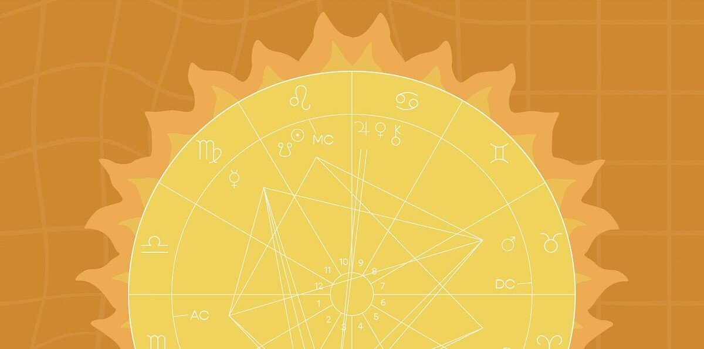
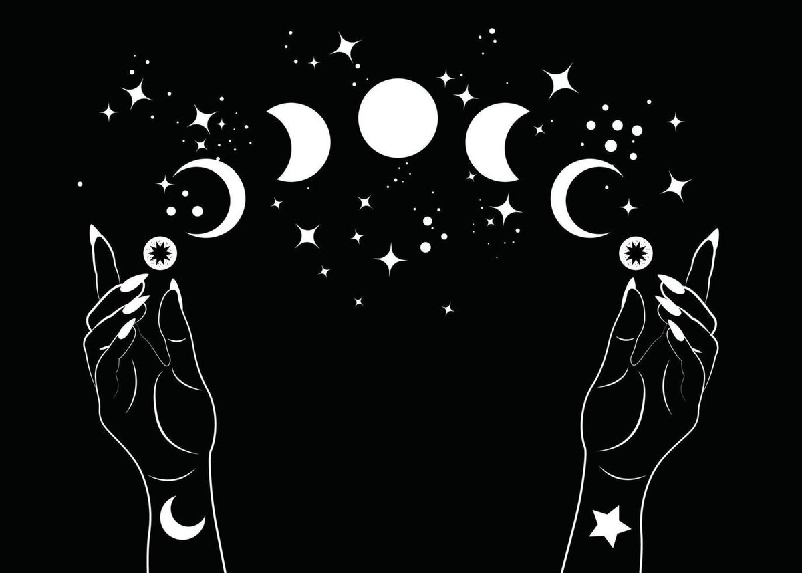

Your rising sign
The energetic signature you radiate and how it shapes your personality and life’s mission.
Star Magic with Carolee
Through intuitive astrology and ritual wisdom.


Meet Carolee
I’ve lived an intense, transformative life. And honestly, nothing has been more profound than discovering the purpose in everything I’ve experienced, through an illumination of my unique blueprint. When I began to see the story written in my birth chart, even the hardest moments started to make sense. Living in alignment with the Cosmic Clock has transformed everything for me, personally and relationally.
Come learn about your blueprint and awaken to the cosmic rhythm that has been guiding you all along.
Astrology is more than personality traits or horoscopes. It is the ancient language of the Universe, the original compass of the soul. Your birth chart holds the keys to your gifts, your challenges, and your destiny.
In our time together, we’ll illuminate your soul’s blueprint, explore the seasons of your life, and reveal how to align your present moment with the Cosmic Clock, so you can live not just with intention, but in harmony with the grand design of Creation.
My approach blends mystical reverence with grounded, practical insight. I see your chart as a living mirror, reflecting who you are now and the infinite potential of who you are becoming.
— Carolee
What’s in astrology, anyway?
Astrology is the manifestation of the hermetic principle, “As above, so below.” There is an incredible wealth of guidance available through the language of the stars. Here are some highlights.
The energetic signature you radiate and how it shapes your personality and life’s mission.
The dance between your chart’s harmony and its challenges, and how to reframe your trials into your triumphs.
The story your chart tells of your awakening and your true destiny path.
The key to your emotional rhythm, inner world, and cycles of renewal.
A personal point of destiny revealing your soul gifts and the keys you’re here to unlock in this lifetime.
The “wounded healer” within, and the medicine you carry for a world in desperate need of transformation.
Readings
Each session is a doorway into your chart, held with mystical reverence and grounded, practical insight.
See yourself with cosmic clarity and remember why you came here.

Navigate your next trip around the Sun with a map drawn by the cosmos itself.

Step into the moon’s magic and unlock instant cosmic guidance available now.

Discover the soul agreements, harmonies, and hidden alchemy shaping your connection.
Kind words
I recently experienced something amazing and insightful that I can highly recommend – a triple reading package offered by Carolee. I’m very novice when it comes to astrology with some skepticism but how she described my unique soul blueprint was very exciting. It’s hard to explain how empowering this is. In addition to my natal blueprint and my solar return reading, she also gave me a “Moon Magic” session which tied into the full moon that was occurring the next day. This gave me a lot to consider and reflect on what has been part of my life that I should let go of as I move forward during this next month and this next year. It was a lot to remember so I appreciate receiving an email with a summary of the discussion along with the recording of our time together. I hope others take the opportunity to get at least one of these readings with Carolee but I have to say that getting all three was truly magical.

I enjoyed learning about my blueprint. Carolee’s guidance and explanation on my natal chart was clear, personalised and incredibly helpful in deepening my understanding of myself and my life path. The interpretation was not only accurate but also easy to digest and grasp as I do find the astrological concept complicated. There’s a lot to learn. I am excited to work with the cycles of the moon more and align my day to day practices and rituals with better understanding of my chart. Thank you! I love you 🤍✨

Questions?
Write to us and we’ll help you find where to begin.
Join our list
We’re working hard to create some incredible offerings, retreats and healing experiences. Join us and be the first to know when our book drops.